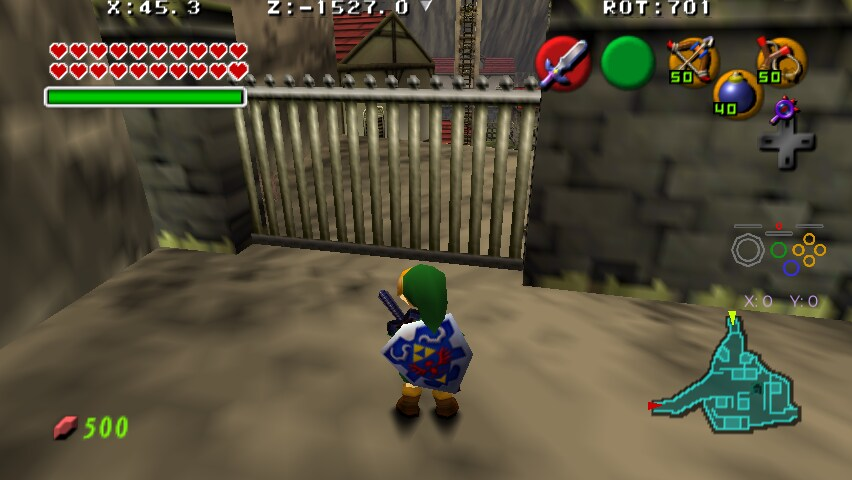
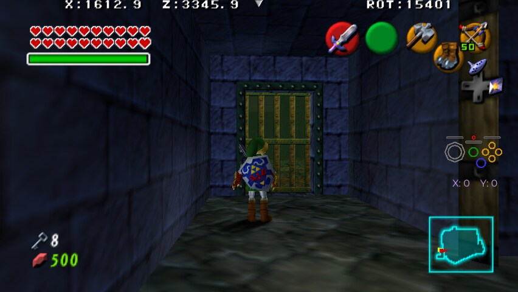
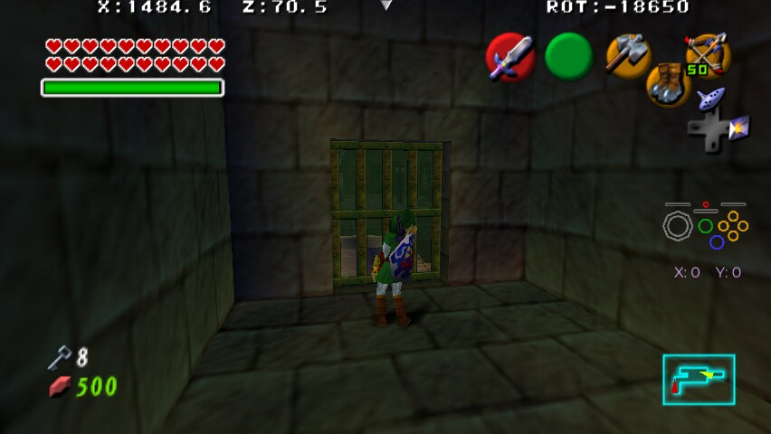

Visible Collision is a trick that adds things to logic that are easily possible, but the game's graphics imply that it shouldn't be possible.
This includes walking through 1 way gates, hammering into blocks, ice and walls to hit switches, or opening chests through graves, among other things.
Walking through the Kakariko gate from the exit into the village.

Ledge Climbing into the back of Impa's House as Adult from the chicken coop.
Getting the Gold Skulltula on 2F of Master Quest Deku tree without breaking the crate.
Dodongo's Cavern Master Quest, opening the chest in the back Poe room without pulling the grave.
Hitting the rusted switch that opens the cage holding Highest Goron in Fire Temple without moving the Song of Time Block.
Hitting the rusted switch that raises the hookshot targets in Master Quest Fire Temple Lizalfos Maze without blowing up the wall.
Killing the Gold Skultulla under the Burning Block at the top of Master Quest Fire Temple without pushing the block and then using Hookshot to get the token.
Getting the Gold Skulltula in the Hidden Switch room of Master Quest Water Temple without being able to break crates.
Getting the Gold Skulltula in the back of Crate Vortex Room of Master Quest Water Temple without being able to break crates.
If Fire Rings is enabled, you can use the Fire Rings trick combined with a Jumpslash to get the freestanding items in Child spirit without hitting the Eye Target.
Destroying the boulder in the crawlspace that stops Child from climbing into Sun on Floor Room in Master Quest Spirit Temple using the Hammer.
Hitting the rusted switch in Master Quest Spirit Trial without hitting the Eye Target to drop the Iron Knuckle.
Hitting the rusted switch in Master Quest Spirit Trial without hitting the Eye Target to drop the Iron Knuckle.
Breaking the pots frozen in Red Ice in Ice Cavern Map Room by spamming Jumpslash.
Killing the Gold Skulltula in Master Quest Bottom of the Well West inner Room without pulling the Grave.
Getting the Gold Skulltula in Master Quest Dodongo's Cavern Gohma Larvae room without breaking the crate.
Opening the box cage in Master Quest Fire Temple's Lizalfos Maze's with Boomerang, Slingshot or Bow.
Opening the chests in Master Quest Fire Temple's Lizalfos Maze's Side Rooms without breaking the crates.
Walking through the gate lowered by the Truth Spinner in Shadow Temple backwards.

Walking through the gate to Stone Umbrella room in Shadow Temple backwards.

Killing the Skulltula under Rubble in B4 Gibdo room of Master Quest Shadow Temple without Explosives.
Hitting the rusted switch in Water Trial without using Blue Fire to melt the ice.